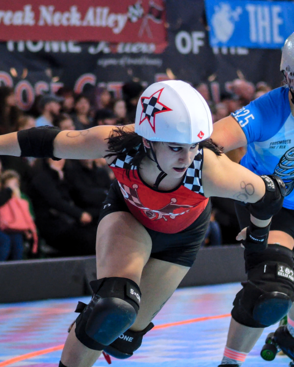
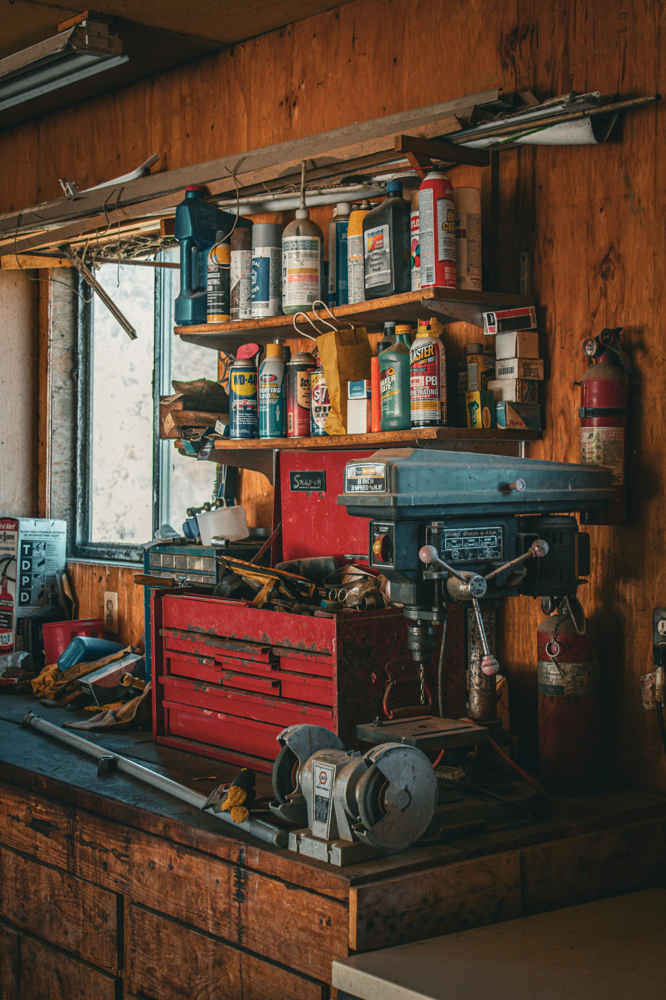
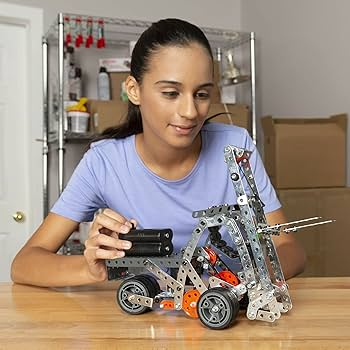
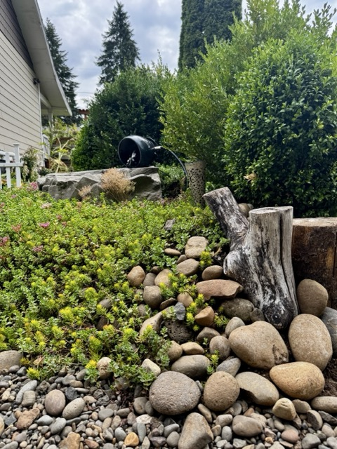
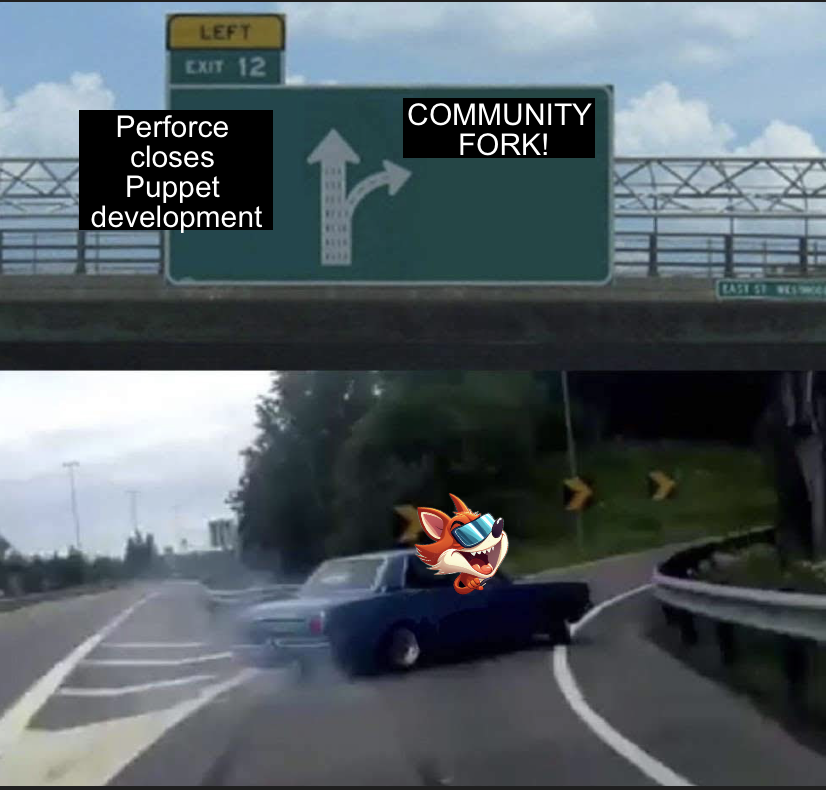
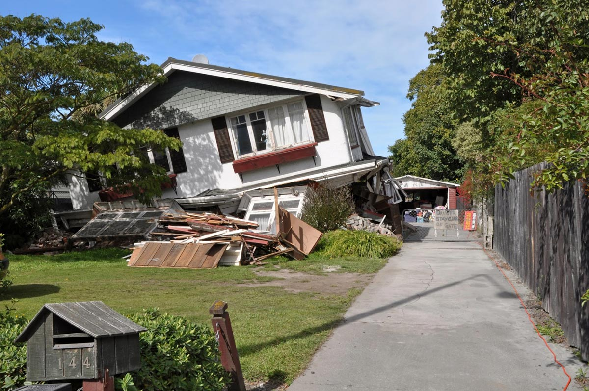
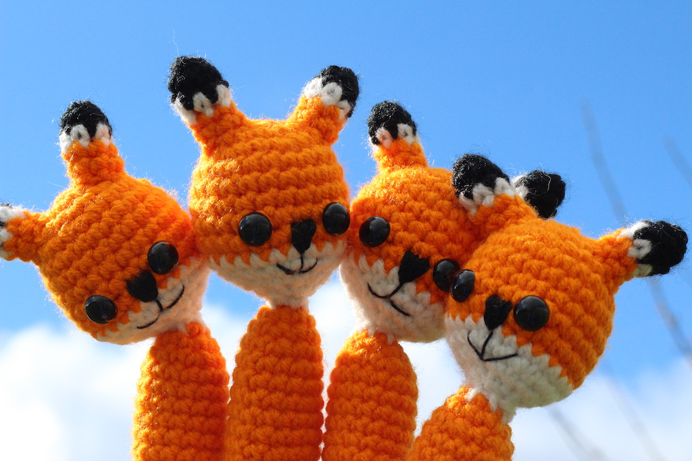
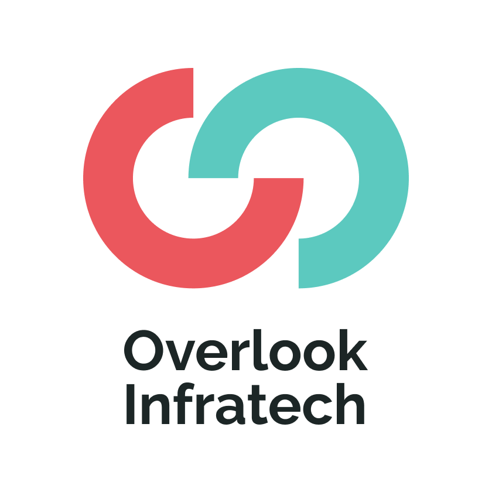
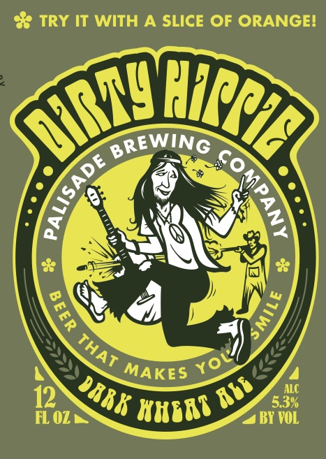

Showoff Menu
Close
Press ? for help.
All features are anonymous.
Press ? for help.
All features are anonymous.
And now I'm a founder and CEO. Life is wild.


Content-enabling products are not solutions on their own.

Steve Ballmer said that "I'm trying to tell people at that time that third parties really mattered" hoping to drive home a simple message: Microsoft needed third-party developers to survive.

None of the platforms are viable without a robust content ecosystem!
These platforms are viable BECAUSE people like you and me build things on them!

This is how communities work. You can't just throw money at them. You need to understand how and why they work. You need to know their incentives. And you need to show up where they are and feed their needs. Let them lead.
So we pivoted to keeping the ecosystem alive.

But money is not the biggest driver for most contributors
These appeal to the hierarchy of needs.

Give people a way to make a difference and they will.
85% or more of engagement now happens in the new Slack* space and our pipeline improvements already let us move at a velocity that the legacy project can only dream of.
Foreshadowing: we are still a business and we plan on making money ethically by keeping these community values first where they belong.
Yes, Slack is problematic. We're looking for an alternative that's acceptable for community members who need to participate from work networks that block Matrix and IRC and such.

As most businesses mature, they lose sight of the value of OSS and lose the employees and community members who care enough to do something about it.
Hashicorp, Redis, Chef, MySQL, now Puppet... Just like a hike in the woods, OSS success takes planning ahead

Avoiding this demise requires a drastic shift in mindset...
Ecosystem is the product!
if there is one single slide you take a photo of and show to your boss, let it be this one.


When the suits start throwing around words like "monetize", make sure they know
what it is that they are monetizing.

Not the path to a 10x unicorn, but to long-term sustainability and community benefit. And we're already making some decent headway.

There is a better future!